1879
Nasce em 14 de março, em Ulm (Alemanha)
1880
Muda-se com sua família para a cidade alemã de Munique
1885 - 1888
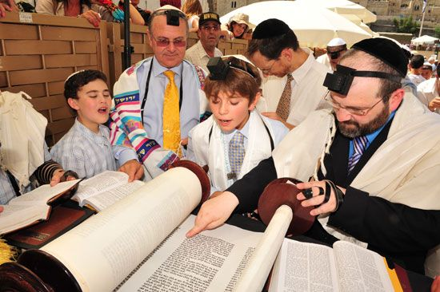Estudante na escola básica católica de Munique. Recebe lições de judaísmo em casa
1888 - 1894
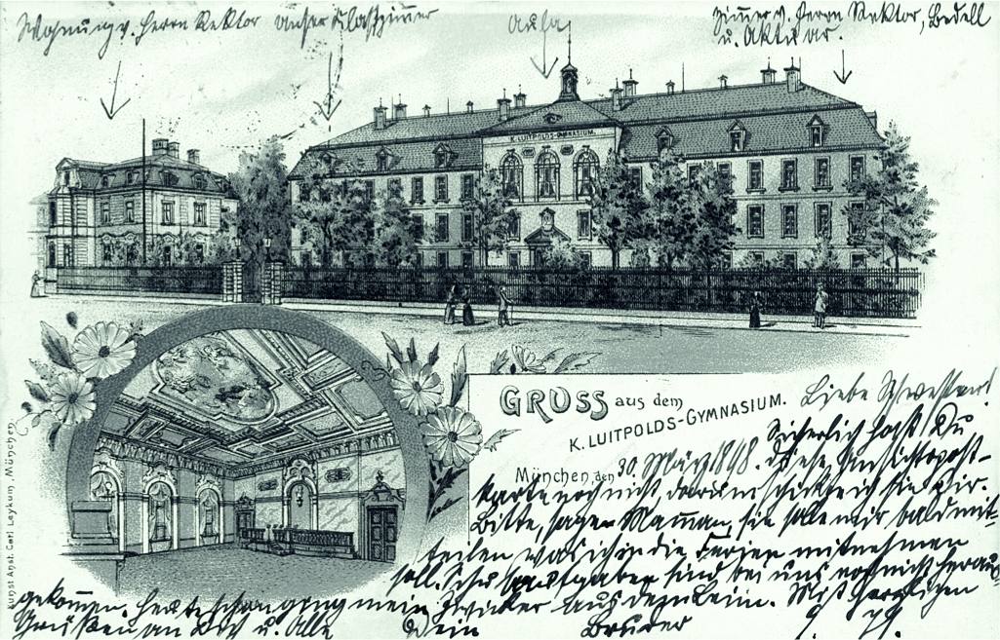Aluno do Luitpold-Gymnasium, em Munique
1894
Seus pais se mudam para Milão (Itália); seis meses depois, Einstein deixa o Luitpold-Gymnasium sem ter completado seus estudos e se junta a sua família em Pavia (Itália)
1895-1896
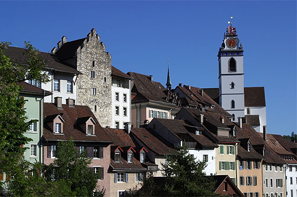Estuda em uma escola de Aarau, na Suíça
1896
Renuncia à cidadania alemã
1896-1900
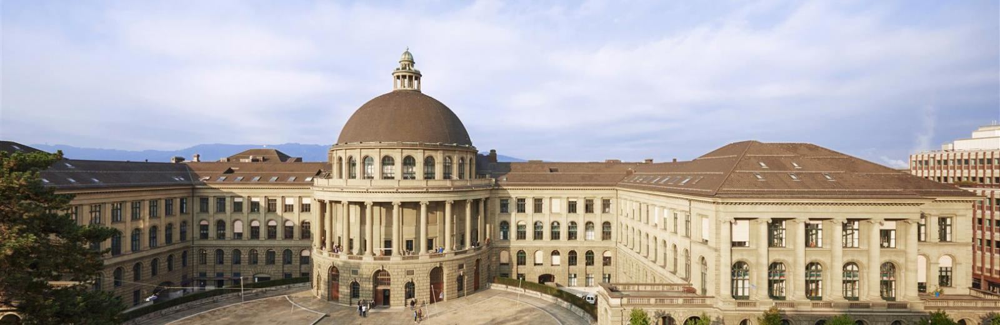Estuda na Polytechnic (Instituto Federal de Tecnologia), em Zurique (Suíça)
1901
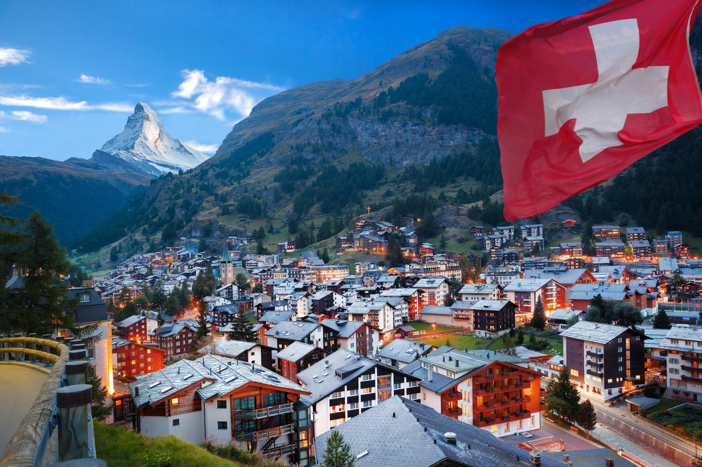Recebe a cidadania suíça
1901-1902
Conclui seu primeiro ensaio científico e atua como professor temporário em escola de Schaffhausen (Suíça)
1902
Em Novi Sad, no Império Austro-Húngaro (atual Sérvia), nasce Lieserl, filha de Einstein com Mileva Maric. Nomeado como especialista técnico de terceira classe no Departamento de Patentes da Suíça, em Berna
1904
Nasce em Berna seu segundo filho, Hans Albert
1905
Conclui artigos científicos sobre "quanta de luz", "O Movimento Browniano" e a teoria da relatividade. Obtém o Ph.D da Universidade de Zurique (Suíça)
1907
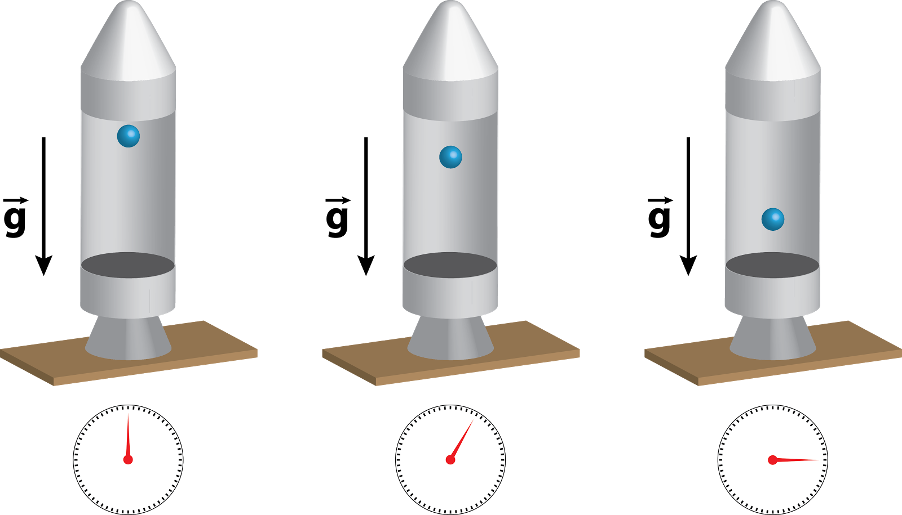Descobre o princípio da equivalência
1908
Indicado professor na Universidade de Berna (Suíça)
1909
Pede demissão do Departamento de Patentes da Suíça. Indicado como professor associado de Teoria da Física na Universidade de Zurique
1910
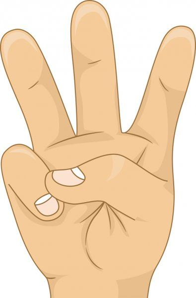Nasce em Berna seu terceiro filho, Eduard
1911
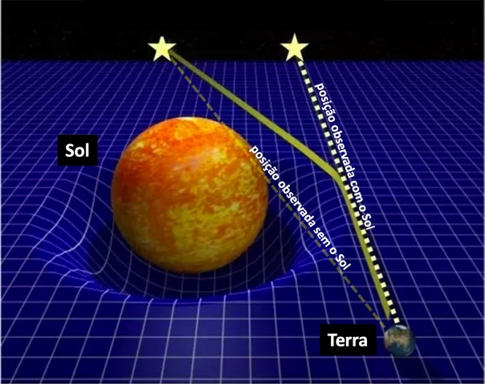Descobre a deflexão da luz
1911-1912
Professor de Teoria da Física na Universidade Alemã, em Praga
1912-1914
Professor de Teoria da Física no Instituto Federal de Tecnologia de Zurique
1914
Indicado professor na Universidade de Berlim e membro da Academia Prussiana de Ciências. Separa-se de sua mulher Mileva Maric, que retorna para Zurique com dois filhos do casal. Assina o "Manifesto aos Europeus", contra a guerra, e adere ao movimento pacifista "New Fatherland League"
1915
Completa a estrutura lógica da teoria geral da relatividade.
1916
Publica a teoria da relatividade geral
1917
1917: Escreve seu primeiro artigo científico sobre cosmologia. Indicado como diretor do Instituto de Física Kaiser Wilhelm, de Berlim
1917-1920
Sofre de uma doença no fígado, úlcera no estômago, icterícia e fraqueza
1919
Divorcia-se de Mileva Maric. Casa-se com sua prima Elsa Einstein Loewenthal. O fenômeno de deflexão da luz é observado na costa ocidental da África e no Estado brasileiro do Ceará durante eclipse. Casa-se com sua prima Elsa Einstein Loewenthal. Anúncio durante reunião da Sociedade Real e da Sociedade Real de Astronomia confirma que as teorias de Einstein foram confirmadas em observações de um eclipse. Einstein se torna uma personalidade mundialmente conhecida, sendo manchete de jornais como "The New York Times" e "The Times"
1921
Realiza sua primeira viagem aos Estados Unidos. Dá palestras na Universidade de Princeton, em Nova Jersey (EUA), sobre a teoria da relatividade. Recebe o Prêmio Nobel de Física pela explicação que deu ao efeito fotoelétrico e pelas contribuições à física em geral
1922

Visita Paris em campanha de retomada das relações entre França e Alemanha. Integra o Comitê de Cooperação Intelectual da Liga das Nações. Realiza palestras no Japão e na China
1923
Visita a Palestina, onde realiza palestra no local em que será construída a Universidade Judaica de Jerusalém. Visita a Espanha
1924
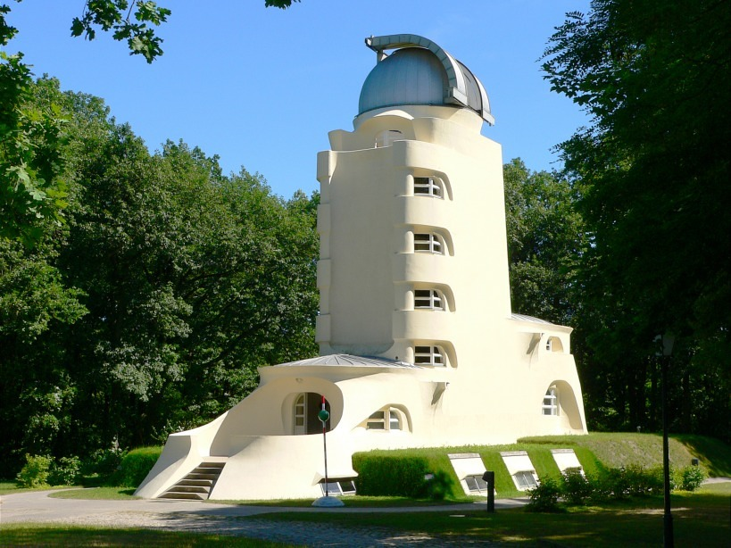Instituto Einstein, em Potsdam (Alemanha), inicia suas atividades
1925
Viaja à América do Sul, onde passa por Brasil, Argentina e Uruguai. Assina manifesto contra o serviço militar obrigatório
1927
Inicia um intenso debate com Nils Bohr sobre a fundação da mecânica quântica
1928
Sofre um temporário colapso físico, sendo diagnosticado com dilatação do coração
1930
Desenvolve intensa atividade em prol da paz
1932
Apoia a manutenção da República de Weimar. Se corresponde com Sigmund Freud sobre a natureza da guerra. Indicado professor do Instituto de Estudos Avançados, em Princeton, Nova Jersey (EUA). Planeja dividir seu tempo entre Berlim e Princeton. Deixa a Alemanha pela última vez
1933
Declara que não vai retornar à Alemanha. Renuncia à Academia de Ciências Prussiana. Passa a primavera e o verão na Bélgica e em Oxford. Migra para os Estados Unidos em setembro
1936
Morre Elsa Einstein
1939
Assina uma carta ao presidente Franklin D. Roosevelt recomendando que os EUA acelerem a pesquisa sobre armas nucleares
1940
Recebe a cidadania norte-americana
1943
Atua como consultor da Divisão de Pesquisa e Desenvolvimento no Gabinete de Artilharia Naval dos Estados Unidos
1944
Cópia manuscrita do artigo de 1905 sobre a relatividade especial é leiloada por US$ 6 milhões em Kansas City (EUA)
1945
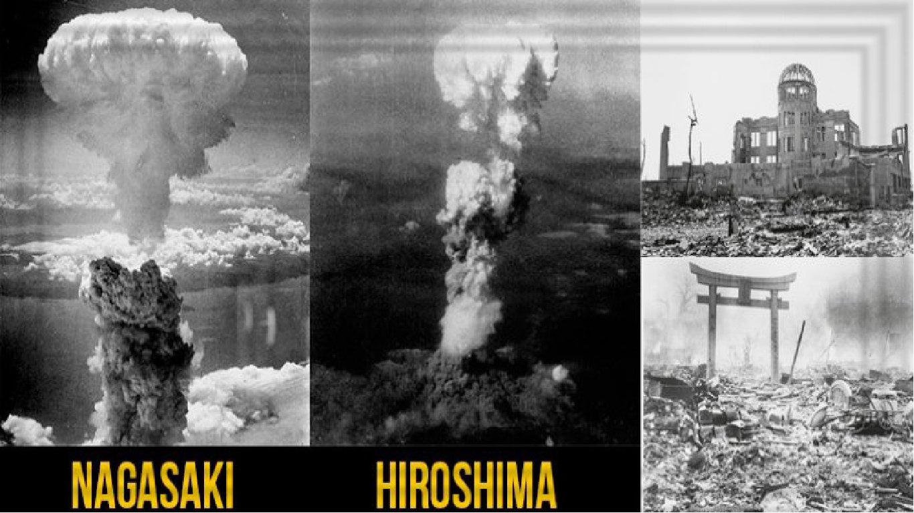Fica abalado com o lançamento de duas bombas atômicas sobre Hiroshima e Nagasaki, no Japão
1946
Torna-se presidente do Comitê Emergencial de Cientistas sobre Estudos Atômicos
1947
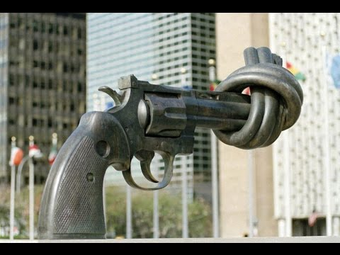Desenvolve intensa atividade em prol do desarmamento mundial
1948
Morre em Zurique (Suíça) sua primeira mulher, Mileva Maric. Apóia a criação do Estado de Israel. Exame revela que Einstein tem um grande aneurisma intacto na aorta abdominal
1949
Publica "Notas Autobiográficas"
1950
Assina seu testamento
1952
Seu nome é lançado para a presidência da Israel, mas ele não aceita
1943
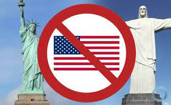Apóia publicamente indivíduos acusados de anti-americanismo sob investigação do comitê federal dos EUA
1955
Morre em 18 de abril, aos 76 anos, no Hospital de Princeton, em Nova Jersey (EUA), vítima de um aneurisma da aorta abdominal